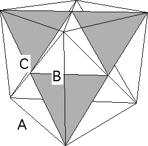

| 7. Assuming the sides of the base triangle have length 1, two applications of the
Pythagorean theorem show that these line segments have length 1/sqrt(2). |
| 8. We have just seen that segments A and B have length 1/sqrt(2), and
C has length 1. |
|  |
| Denoting by theta the angle between sides A and B, the Law of Cosines, |
| A2 + B2 = C2 - 2 A B cos(theta) |
| we see cos(theta) = 0 and so theta is a right angle. |
| 9. From the arrangement of the four tetrahedra that are the limits of the faces, and
from the calculation of the apex angles, we see the surface of the Koch tetrahedron is a
cube. |
| |
|
| stage 1 tetrahedron | | stage 2 tetrahedron |
| | | |
| |
 |
| stage 3 tetrahedron | | stage 4 tetrahedron |
|